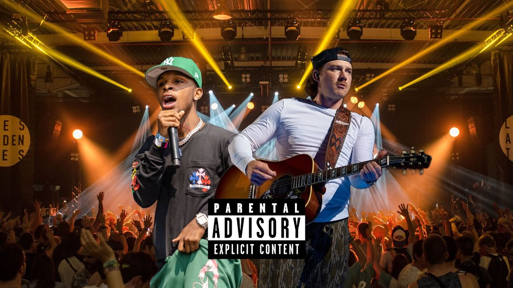

This website will include my favorite artists,favorite albums, and favorite songs!
As a fan of Morgan Wallen and Toosii, I'm captivated by their unique styles and storytelling. Morgan Wallen's soulful country tunes evoke nostalgia and small-town charm, while Toosii's melodic rap speaks to the complexities of urban life and relationships. Despite their different genres, both artists share a gift for authenticity and connecting with audiences on a personal level. I'm excited to see where their musical journeys lead next.
